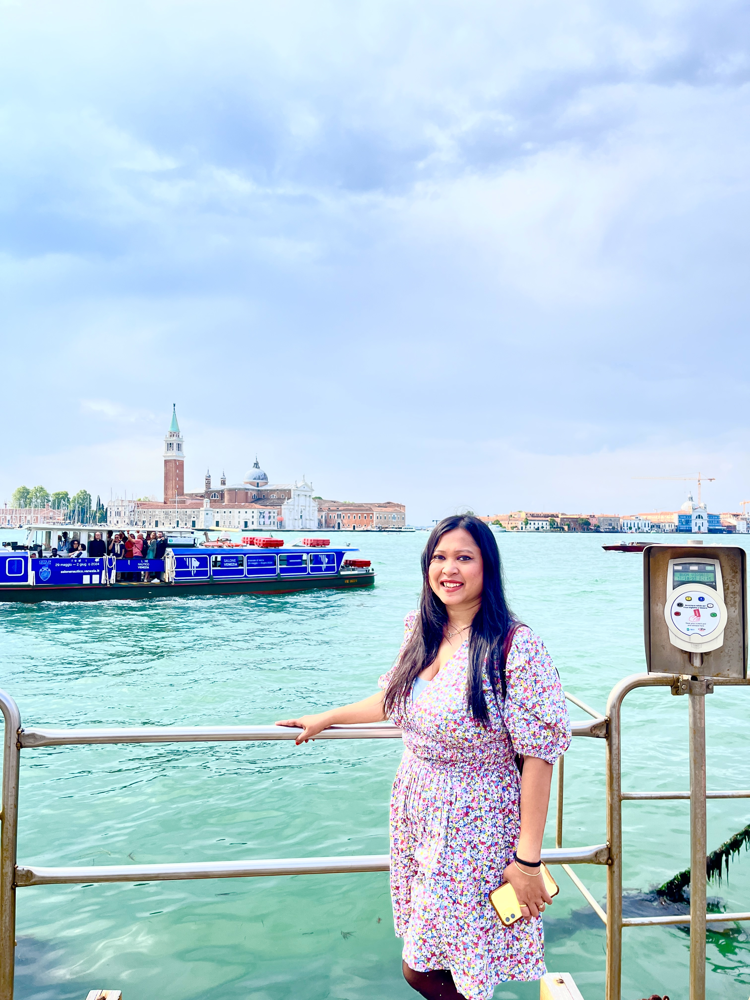
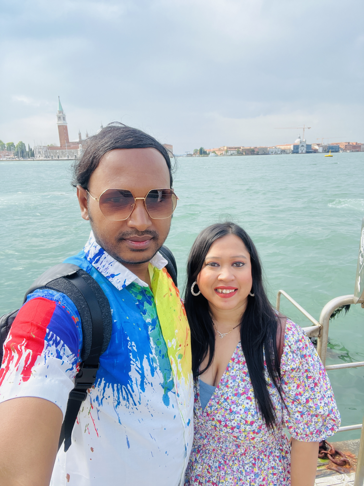

Venice 🛶
🛶 Venice, Italy – Where Timeless Romance Glides on Water
Built on a lagoon and woven together by canals and ancient bridges, Venice is a city like no other. With grand basilicas, hidden alleyways, and the quiet charm of gondolas gliding through narrow waterways, Venice captures hearts with its timeless beauty and rich history.
📌 Highlights of Venice:
- 🌉 Rialto Bridge (Ponte di Rialto): The most famous stone bridge in Venice, offering stunning views of the Grand Canal and surrounded by lively markets selling everything from fresh seafood to Murano glass.
- 🰠St. Mark’s Basilica & Piazza San Marco: Marvel at golden mosaics and Byzantine architecture, and climb the Campanile for breathtaking views of the city’s rooftops and lagoon.
- 🛶 Gondola & Vaporetto Rides: Drift through quiet canals by gondola or explore the Grand Canal by vaporetto (water bus) for a unique perspective of Venice’s waterfront palaces.
- 🍝 Doge’s Palace (Palazzo Ducale): Walk through lavish halls once home to powerful doges and cross the Bridge of Sighs — steeped in Venetian legend.
- 🏛️ Art & Culture: Discover masterpieces at the Gallerie dell’Accademia and modern works at the Peggy Guggenheim Collection.
- 🌅 Islands Beyond Venice: Take a boat trip to Burano, famous for colorful houses and lace, and Murano, renowned for centuries of glass-making tradition.
🕒 Best Time to Visit:
- 🌸 Spring (April–June): Mild weather, blooming flowers along canals, and manageable crowds before peak summer.
- 🌠Summer (July–August): The busiest season, full of energy and events, though mornings and evenings offer quieter moments to explore.
- 🂠Autumn (September–October): Warm days, fewer tourists, and magical golden light reflecting off the canals and palazzi.
- ❄️ Winter (November–February): Mystical foggy mornings, peaceful alleys, and Carnevale festivities with ornate masks and costumes.
🧳 Things to Keep in Mind:
- 🚶 A City Made for Walking: Venice is entirely pedestrian; be ready to cross many bridges and wander through maze-like alleys.
- 💰 It Can Be Expensive: Restaurants and cafés near major sights often charge more. Venture into quieter districts for authentic and affordable meals.
- 🚤 Public Transport on Water: Consider a vaporetto pass if you plan to travel between islands and along the Grand Canal often.
- 📷 Picture-Perfect Spots: Sunrise over the Grand Canal, sunset at Punta della Dogana, and reflections in the canals of Burano.
- 🍝 Taste Local Flavors: Savor cicchetti (Venetian tapas), seafood risotto, and don’t miss a slice of classic tiramisu, which was born in this region.
✨ Final Thoughts
Venice isn’t just a destination; it’s a living dream — a place where every narrow alley and quiet canal tells a story. Whether you come for art, history, or the simple pleasure of getting lost among hidden courtyards, Venice leaves an imprint on your heart that lingers long after you’ve sailed away. It’s a city to see, to feel, and to remember — forever.
Photo Gallery:







Click on the images for full screen and navigation.